How Do Things Find Their Paths?
A journey from planetary orbits to quantum amplitudes
The River's Intelligence
A river doesn't "know" the path to the sea. Yet it finds it — carving canyons, meandering through valleys, always moving toward lower ground. We understand this: gravity pulls, water flows, resistance shapes the channel.
The Lightning's Decision
In milliseconds, lightning traces a path through miles of atmosphere. It doesn't search sequentially — it branches, explores, and commits. The path emerges from the physics of ionization cascading through air.
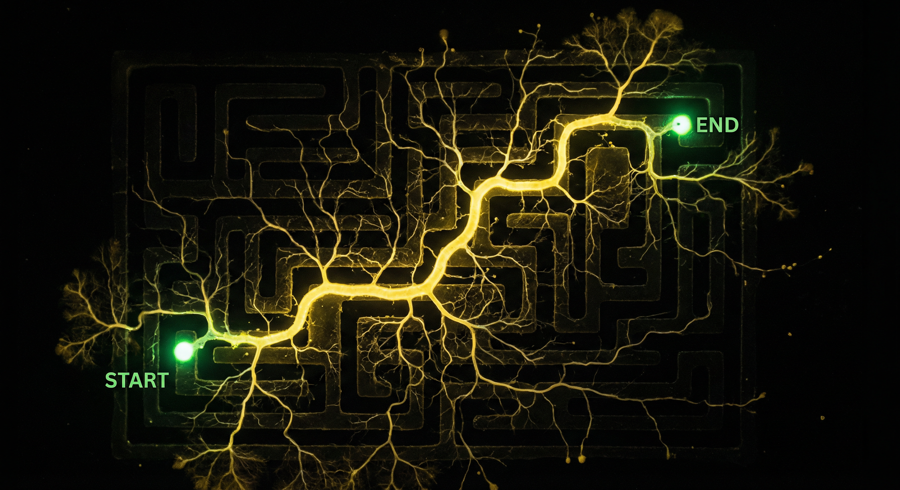
The Slime Mold's Solution
Physarum polycephalum — a brainless organism — solves mazes, recreates highway networks, optimizes paths. It explores everywhere at once, then prunes. Intelligence without a mind.
The Quantum Mystery
At the smallest scales, something strange happens. Particles don't find paths — they exist in all paths simultaneously until observed. The HHL algorithm exploits this to solve equations exponentially faster.
Our Journey
At every scale, we ask: How does the system "know" where to go?
The Celestial Dance
How do planets, stars, and galaxies find their orbits? They solve an N-body problem continuously — each body responding to every other, finding stable paths through gravitational harmony.
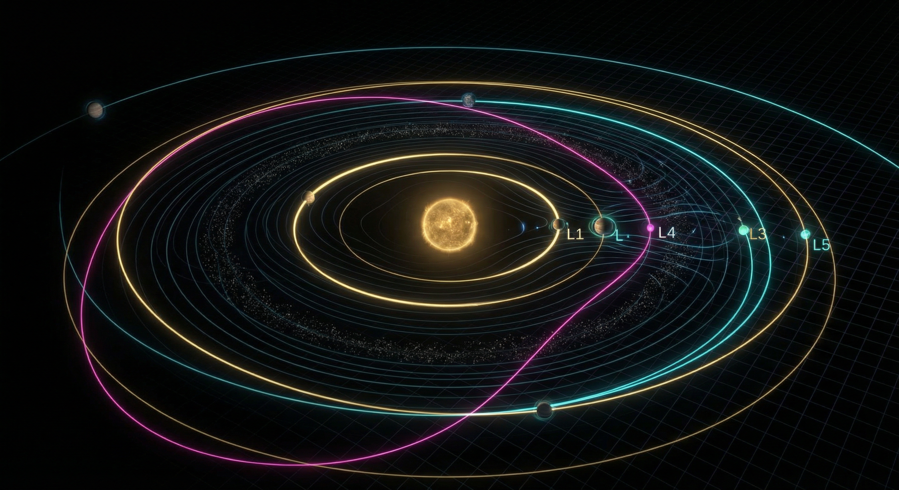
The Pathfinding Principle
Every mass curves spacetime. Bodies follow geodesics — the "straightest possible paths" through curved space. There's no computation, no search. The path is the geometry.
Einstein's insight: Mass tells space how to curve; space tells mass how to move.
The Mathematics of Orbital Pathfinding
Simultaneous Solution
The solar system doesn't solve orbits one planet at a time. All bodies find their paths simultaneously — a continuous, real-time solution to coupled differential equations.
Emergent Stability
Orbital resonances, Lagrange points, stable configurations — these emerge from the physics. The system "finds" stability through billions of years of gravitational negotiation.
Earth's Flowing Systems
Zoom into Earth. Watch how atmosphere, ocean, and crust find their paths in synchronized complexity — weather patterns, ocean currents, tectonic flows all solving their equations together.
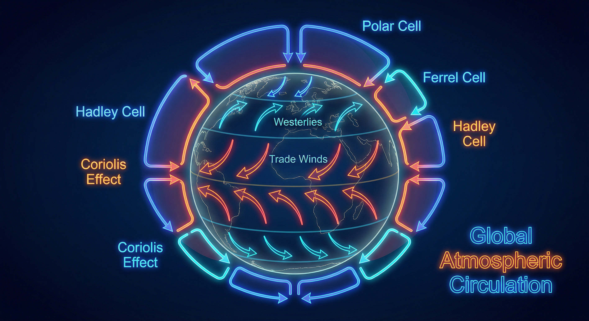
Atmospheric Circulation
Heated air rises at the equator, flows poleward, cools, descends. Coriolis forces twist these flows into trade winds, westerlies, jet streams. The atmosphere finds circulation cells that balance heat distribution.
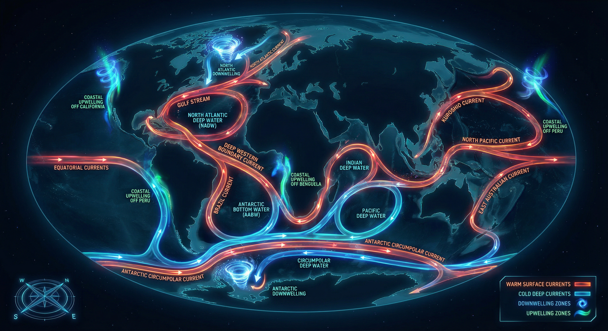
Ocean Currents
The thermohaline circulation — a global conveyor belt driven by temperature and salinity differences. Water finds paths that transport heat from equator to poles, taking centuries to complete one cycle.
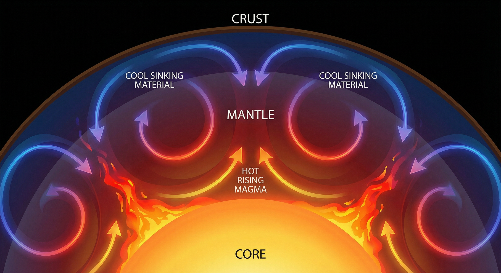
Tectonic Flow
Mantle convection drives continental drift. Hot rock rises, spreads, cools, sinks — finding circulation patterns that reshape Earth's surface over millions of years.
Coupled Pathfinding
These systems don't operate in isolation. Ocean currents affect weather; weather erodes mountains; erosion affects ocean chemistry; ocean chemistry affects climate. Each system's "path" is shaped by all others — a coupled solution emerging continuously.
Where Paths Become Visible
At this scale, we can see pathfinding happen. Lightning strikes, objects fall, rivers carve, trees grow. Each phenomenon reveals how local rules produce global paths.
How Lightning Finds Its Path
The stepped leader: A column of ionized air extends downward in steps of ~50 meters, branching as it goes. Each step follows the path of least electrical resistance through the air.
The connection: When a branch gets close to ground, a streamer rises to meet it. The circuit completes, and the return stroke illuminates the chosen path.
The insight: Lightning explores many paths simultaneously through branching, then "commits" to one. The final path wasn't predetermined — it emerged from parallel exploration.
How Falling Objects "Decide"
The question: When a tree falls, how does it "decide" which way to go? When a rock tumbles down a slope, what determines its path?
The classical answer: Initial conditions plus physics. The slight lean, the first gust of wind, the exact shape of the terrain — deterministic chaos from precise causes.
The deeper view: The object follows the principle of least action — the path that minimizes a specific quantity (action = energy × time) over the trajectory. Nature finds this minimum automatically.
How Rivers Find Their Paths
The process: Water flows downhill. That's it. But from this simple rule emerges dendritic networks, oxbow lakes, deltas, and canyons.
Self-organization: Rivers don't just find paths — they create them. Erosion deepens channels, which attracts more water, which causes more erosion. Positive feedback sculpts the landscape.
Optimal networks: River networks tend toward configurations that efficiently drain watersheds — not because they "want" efficiency, but because inefficient configurations erode away.
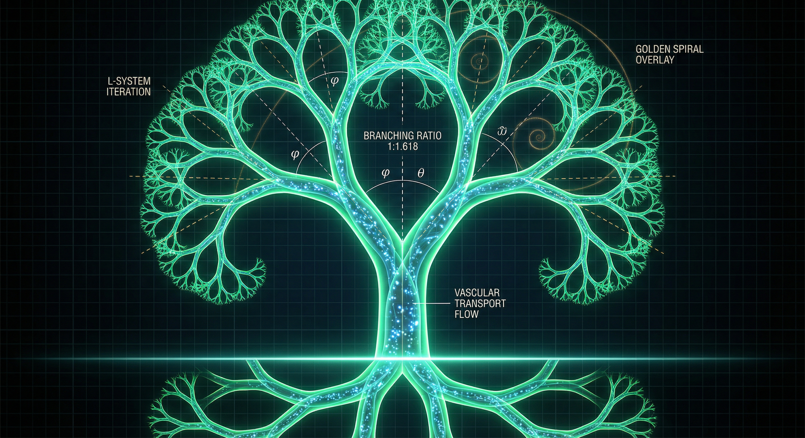
How Trees Place Their Branches
The challenge: A tree must find paths for water (roots), light (branches), and structural support — all simultaneously, all without a brain.
The solution: Local rules. Roots grow toward moisture. Branches grow toward light. Growth hormones distribute according to simple gradients. The tree's form emerges from molecular-scale decisions.
Fractal efficiency: The branching patterns of trees (and lungs, and rivers, and blood vessels) follow similar mathematics — space-filling fractals that maximize surface area for exchange.
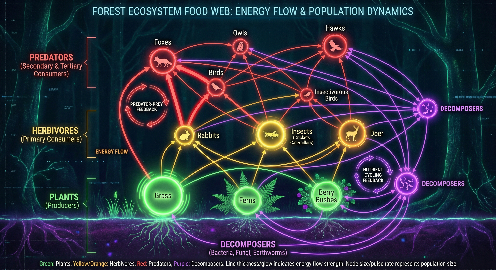
How Ecosystems Find Balance
The dance: Predators and prey, competition and cooperation, energy flowing through food webs. Each species "finds its path" — its niche — through evolutionary time.
Dynamic equilibrium: Ecosystems don't reach static balance. They oscillate, adapt, recover from disturbance. Stability emerges from the interplay of countless pathfinding agents.
The parallel: Like the solar system, ecosystems solve coupled equations simultaneously. Every species' path depends on every other's.
How We Find Our Paths
We navigate cities, make decisions, plan routes. And we've taught machines to pathfind too. How do our algorithms compare to nature's methods?
Human Navigation
Cognitive Maps
We build mental models of space — landmarks, routes, regions. Our hippocampus contains "place cells" that fire for specific locations.
Heuristic Search
We don't explore all paths. We use shortcuts: "head generally toward the goal," "prefer familiar routes," "avoid known obstacles."
Satisficing
We rarely find optimal paths. We find "good enough" paths quickly — trading optimality for speed.
Algorithmic Pathfinding
Dijkstra's Algorithm
Explores outward from start, always expanding the closest unvisited node. Guaranteed optimal but explores many unnecessary paths.
A* Search
Uses a heuristic (estimated distance to goal) to prioritize exploration. Faster than Dijkstra while still optimal if heuristic is good.
Real-World Systems
GPS navigation, game AI, robot motion planning — all use variations of these algorithms, optimized for specific constraints.
The Classical Limitation
All classical pathfinding — biological and digital — shares a constraint: paths must be explored sequentially or through limited parallelism. Even the fastest algorithms scale with the size of the search space.
What if we could explore all paths simultaneously?
Pathfinding in the Molecular World
We've zoomed in a billion-fold. Here, proteins fold, enzymes find substrates, signals propagate through cellular networks. The pathfinding looks familiar — but watch closely.
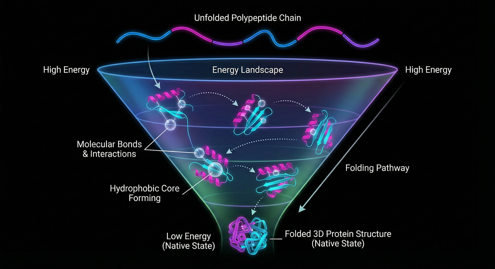
Protein Folding
A protein chain finds its 3D structure from astronomical possibilities. Levinthal's paradox: random search would take longer than the age of the universe, yet proteins fold in milliseconds.
The solution: Energy landscapes. The protein doesn't search randomly — it "rolls downhill" on an energy surface, finding low-energy configurations through thermal motion.
Still classical: local interactions, thermodynamic gradients, no superposition required.
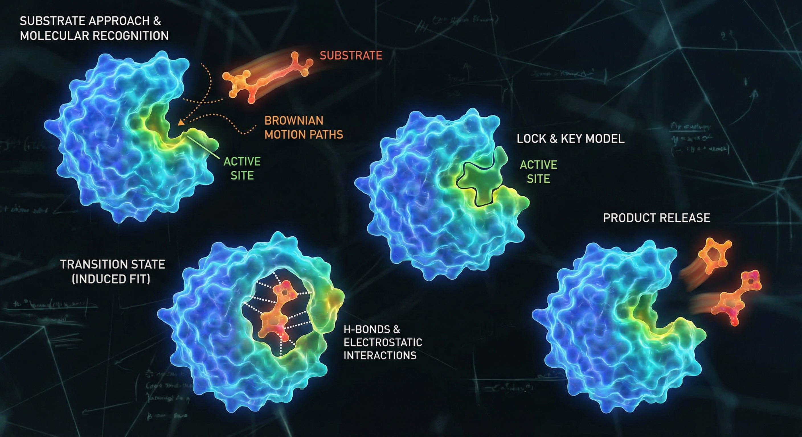
Enzyme-Substrate Binding
An enzyme finds its substrate in the cellular soup — a needle in a molecular haystack. How?
The solution: Diffusion plus recognition. Random thermal motion brings molecules together; shape complementarity and charge distribution determine binding. Millions of collisions, rare successful locks.
Still classical: probability, diffusion, chemical affinity.
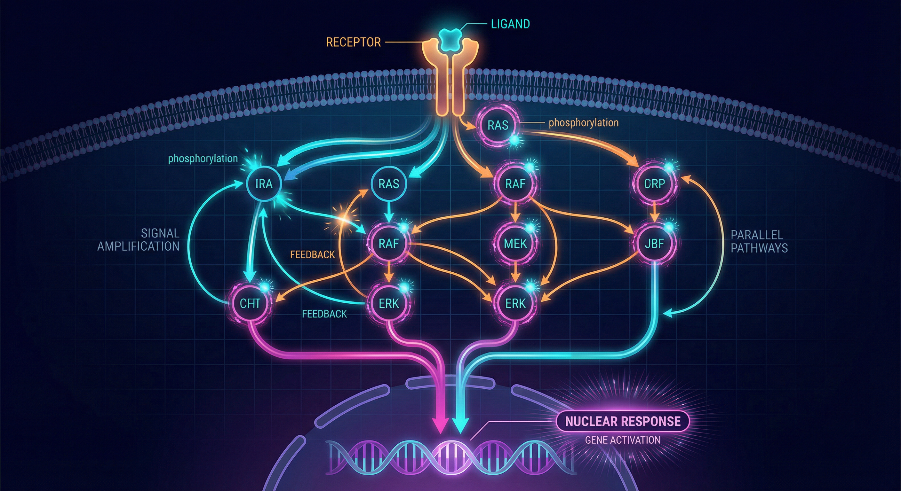
Cellular Signaling Networks
Signals cascade through protein networks — kinases activating kinases, feedback loops, signal amplification. The cell "computes" responses to stimuli.
The pathfinding: Signals flow through the network like water through channels. Paths emerge from network topology and reaction kinetics.
Still classical: reaction rates, concentrations, diffusion.
The Quantum Threshold
Slow down time. Zoom past atoms, past nuclei, to the scale where quantum mechanics dominates. Here, pathfinding transforms into something alien — and powerful.
Classical Pathfinding
- Object takes one path
- Path determined by initial conditions
- Exploration is sequential or parallel (limited)
- We can track the object's position
Quantum Pathfinding
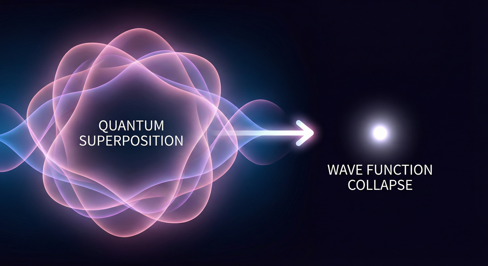
- Particle exists in all paths simultaneously
- Paths interfere: amplitudes add and cancel
- Observation collapses superposition to one outcome
- The "answer" emerges from interference patterns
The Double Slit Experiment
The iconic demonstration of quantum weirdness. A single particle, two possible paths, and an interference pattern that defies classical explanation.
The mystery: Fire particles one at a time. Each hits the screen at a single point. But over many particles, an interference pattern emerges — as if each particle went through both slits and interfered with itself.
The resolution: Quantum mechanics says the particle's position is not determined until measured. Before detection, it exists as a wave of probability amplitudes traveling through both slits. The amplitudes interfere, and the interference pattern determines where particles are likely to land.
Feynman's Path Integral
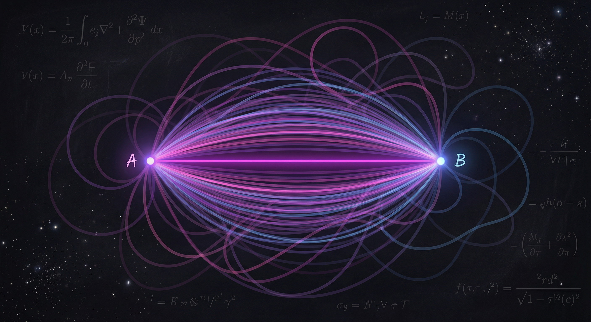
Richard Feynman reformulated quantum mechanics with a stunning idea: to calculate the probability of a particle going from A to B, sum over all possible paths — not just the classical one.
Each path contributes a complex amplitude based on its "action" (roughly, energy × time). The amplitudes interfere:
- Paths near the classical trajectory have similar phases → constructive interference
- Wild paths have random phases → cancel out
The classical path emerges as the "brightest" region where amplitudes constructively interfere. Quantum mechanics doesn't contradict classical physics — it contains it.
The Computational Implication
If a quantum system naturally explores all paths simultaneously and computes their interference... can we harness this for computation?
This is the promise of quantum computing. The HHL algorithm exploits superposition and interference to solve systems of linear equations exponentially faster than classical methods.
Quantum Pathfinding for Linear Systems
The Harrow-Hassidim-Lloyd algorithm solves Ax = b exponentially faster than classical methods. Here's how it works, through three key concepts.
The Problem
Solve a system of N linear equations: Ax = b
Classical best: O(N√κ) operations
HHL: O(log(N)κ²) operations
Exponential speedup in N!
The Catch
You don't get x directly. You get a quantum state |x⟩ whose amplitudes encode the solution.
Good for: computing properties of x (like xᵀMx)
Bad for: printing out all N values of x
The Requirements
- A must be sparse (few non-zero entries per row)
- A must be well-conditioned (κ not too large)
- |b⟩ must be efficiently preparable
Amplitude Interference
How quantum paths combine to select solutions
In quantum mechanics, states have amplitudes — complex numbers that can add constructively or destructively.
When two paths lead to the same outcome:
- Same phase: Amplitudes add → higher probability
- Opposite phase: Amplitudes cancel → lower probability
The HHL algorithm engineers these interferences so that the correct solution gets amplified and wrong answers get suppressed.
Parallel Exploration
The slime mold strategy at quantum scale
Slime Mold (Classical)
Quantum Superposition
Remember the slime mold? It explores all paths simultaneously, then prunes inefficient ones through resource flow.
Quantum computation does something similar:
| Slime Mold | Quantum Algorithm |
|---|---|
| Physical network explores all paths | Superposition encodes all possibilities |
| Resource flow selects efficient paths | Amplitude interference selects solutions |
| Inefficient paths starve | Wrong answers destructively interfere |
| Final network is optimized | Measurement yields answer |
The difference: quantum exploration is exponentially more parallel. N qubits can represent 2ᴺ states simultaneously.
Eigenvalue Inversion
The heart of the algorithm
To solve Ax = b, we need x = A⁻¹b. This means inverting A. Here's how HHL does it:
Encode b as quantum state |b⟩
The vector b becomes the amplitudes of a quantum state.
Quantum Phase Estimation
Decompose |b⟩ into eigenvectors of A and extract eigenvalues λⱼ into a register.
Rotate ancilla qubit
Rotate an extra qubit by an angle proportional to 1/λⱼ. This embeds the inverse into amplitudes.
Measure and post-select
Measure the ancilla. If we get "success," the remaining state is proportional to |x⟩ = A⁻¹|b⟩.
The key insight: quantum mechanics lets us perform operations on all eigenvalues simultaneously because they exist in superposition. Classical algorithms must process them one at a time.
Bringing It All Together
Classical systems find paths through local rules propagating globally
Biological systems explore in parallel, select through resource flow
Quantum systems exist in all paths at once, select through interference
HHL harnesses quantum pathfinding to solve linear systems exponentially faster
From rivers to lightning to slime molds to quantum algorithms — pathfinding is universal. The methods differ, but the pattern persists: explore possibilities, then select through some optimization principle. At the quantum scale, we've found a way to explore exponentially more possibilities simultaneously. This is the promise of quantum computing.
The Quantum Respiration Bound
A formal mathematical framework establishing fundamental limits on quantum system viability under persistent forcing — when does continuous evolution demand discrete intervention?
Model Assumptions
Consider a quantum system on a finite-dimensional Hilbert space ℋ with dimension:
where G is a topological complexity measure (analogous to the number of logical qubits). We assume:
- Persistent forcing from the computational problem via a non-zero f(t) ∈ ℋ₀*, representing ongoing stress driving history accumulation
- Fixed topology (Ġ = 0), keeping N constant — capacity cannot grow dynamically
- Closed-phase evolution is unitary (Class II per Theorem 6.4) between interventions
- History variable m*(t) represents accumulated stress (entanglement entropy, circuit depth, phase congestion), satisfying Assumption 3.7
Under the above assumptions, if the system is to remain viable — maintaining a positive spectral gap λ₁(t) > 0 necessary for solving Lφ = f — then respiration events (non-unitary interventions such as measurements or error corrections) must occur with inter-event times bounded by:
where ρ is a lower bound on the history accumulation rate ṁ*(t), and Δm is the reduction in accumulated history per respiration event.
- By Proposition 6.9, under unitary (Class II) evolution with persistent forcing, the history variable m*(t) accumulates monotonically: ṁ*(t) ≥ ρ > 0.
- By the Master Inequality (Theorem 5.9), viability (λ₁ > 0) requires either Ġ > 0 (topology growth) or respiration events that reduce m*(t). Since Ġ = 0 by assumption, respiration is mandatory.
- Each respiration event reduces m*(t) by at most Δm. Between events, m*(t) increases by at least ρτ.
- For viability, the reduction must offset accumulation: Δm ≥ ρτ, hence τ ≤ Δm/ρ.
- By Theorem 7.3, this yields the stated bound on inter-event times. ∎
The Solvability Number σ(t)
σ < 1: Viable Unitary Phase
System evolves unitarily. Spectral gap remains positive (λ₁ > 0). Evolution proceeds coherently without mandatory intervention.
σ → 1: Respiration Required
History accumulation approaches viability threshold. Without respiration, spectral gap will close (λ₁ → 0), causing transport failure.
σ > 1: Spectral Collapse
Viability lost. System cannot maintain positive spectral gap. Immediate respiration (discrete Aleph event) mandatory for continued evolution.
Fast-Impulse Scaling (ε → 0)
The Homogenization Threshold
As τ → 0 (infinitely frequent respiration), discrete interventions homogenize into an effective continuous dissipative law. This defines the homogenization threshold — the boundary where the quantum respiration bound τ ≤ Δm/ρ determines minimum intervention frequency for indefinite viability.
Respiration Events: From Aleph to Quantum Gates
When σ → 1, viability demands a respiration event — a non-unitary intervention that resets local stress while potentially increasing global rigidity. These discrete interventions (also called Aleph events for their topological surgery character) manifest in quantum computing as:
- Measurements — projective collapse reducing entanglement entropy
- Quantum gates — operations resetting phase congestion locally
- Error corrections — syndrome measurements restoring codeword structure
Each respiration event:
- Reduces local history m*(t) by Δm
- Adds to global Met accumulation M(t)
- Resets σ below viability threshold
- Maintains positive spectral gap λ₁ > 0
Mapping to Quantum Circuit Complexity
The Quantum Respiration Bound translates directly into circuit complexity constraints — establishing upper bounds on unitary evolution intervals and lower bounds on total interventions.
The correspondence between the GTTI framework and quantum circuit complexity is precise:
- Closed-phase evolution ↔ Unitary gates (Class II dynamics)
- Respiration events ↔ Measurements, gates, error-corrections
- Quantum Respiration Bound τ ≤ Δm/ρ ↔ Homogenization threshold for gate timing
- History m*(t) ↔ Entanglement entropy, circuit depth, phase congestion
This yields upper limits on circuit depth between interventions, directly tied to entanglement growth rates and Hilbert space dimensions.
The Quantum-GTTI Correspondence
| GTTI Continuum Concept | Quantum Circuit Analog | Physical Interpretation |
|---|---|---|
| History accumulation m*(t) | Entanglement entropy / phase congestion | Complexity that builds during unitary evolution, requiring eventual reset |
| Respiration bound τ ≤ Δm/ρ | Maximum coherent evolution interval | Upper limit on time between gates/measurements before viability fails |
| Respiration event (Aleph) | Gate / Measurement / Error correction | Non-unitary intervention resetting local stress while adding to global Met |
| Met accumulation M(T) | Circuit depth D(T) ≥ ρT/Δm | Total computational cost; grows linearly with computation time |
| Hilbert dimension N = exp(μG) | State space size 2n | Fixed capacity under Ġ = 0; cannot grow to offset accumulation |
| Spectral collapse λ₁ → 0 | Decoherence / hardness wall | Viability lost; equation Lφ = f becomes unsolvable |
Circuit Depth as Met Accumulation
Phase Regimes in Quantum Circuits
Below Threshold (σ < 1)
Quantum evolution remains unitary (Class II). The wavefunction evolves coherently via Schrödinger equation. Spectral gap λ₁ > 0 ensures transport/solvability. This is "easy" quantum computation — reversible, coherent, viable.
At Threshold (σ → 1)
History accumulation approaches critical level. Entanglement entropy or phase congestion saturates available structure. A respiration event (gate/measurement) must occur — collapsing local superpositions but maintaining global viability.
The Quantum Zeno Connection
In the Zeno regime — where respiration events become frequent and low-strength — the dynamics homogenize into Lindbladian (Class I dissipative) evolution:
Critical insight: Homogenization rescales the effective accumulation rate ρ, but does not eliminate the need for discrete Aleph events when σ → 1. The Lindbladian provides a smoothed approximation, but the underlying discrete structure persists at the fundamental level.
This aligns with ongoing research in dissipative quantum systems, where continuous error correction approaches the Zeno limit but cannot fully replace discrete syndrome measurements.
Zeno as Homogenization Limit
The Quantum Zeno Effect — where frequent measurements freeze evolution — represents the τ → 0 limit of the respiration bound. Infinitely rapid interventions average into an effective projection operator, constraining the system to a decoherence-free subspace. However, this is an idealization: real systems face finite intervention strength, meaning σ → 1 events remain unavoidable for long-time viability.
The Unified Framework
The Circuit Complexity Bound establishes fundamental limits on quantum computation — proving that indefinite viability demands infinite interventions, with profound implications for scaling quantum algorithms.
For a quantum computation of duration T under the assumptions of Corollary 7.5, the minimum circuit depth D(T) — counting respiration events (gates/measurements) — satisfies:
where ⌈·⌉ denotes the ceiling function. This establishes a lower bound on total interventions that grows linearly with computation time.
- By Corollary 7.5, inter-event times must satisfy τ ≤ Δm/ρ.
- Over duration T, the number of intervals is at least T/τmax = T/(Δm/ρ) = ρT/Δm.
- Since events are discrete, D(T) ≥ ⌈ρT/Δm⌉. ∎
Fundamental Implications
Linear Intervention Growth
For indefinite viability (T → ∞), the number of required respiration events grows without bound: D(T) → ∞. No finite circuit can sustain arbitrarily long quantum computation under persistent forcing.
Upper Bound on Unitary Intervals
Between any two interventions, unitary evolution is bounded by τmax = Δm/ρ. This "clock speed" constraint limits how long coherent computation can proceed before mandatory respiration.
Scaling Quantum Circuits
This bound may reflect fundamental controversies in scaling quantum circuits amid noise and entanglement growth — suggesting that NISQ-era limitations are not merely engineering challenges but mathematical necessities.
The Spectral Gap & Viability Threshold
Spectral Collapse as Computational Limit
When the spectral gap closes (λ₁ → 0), the system loses viability — the equation Lφ = f becomes unsolvable. In quantum computing, this manifests as:
- Decoherence — environmental coupling overwhelming coherent evolution
- Entanglement saturation — circuit depth exceeding the bounds set by Hilbert space dimension
- Exponential hardness walls — algorithms hitting complexity barriers that cannot be circumvented by additional qubits alone
Note: The spectral gap problem is undecidable in general quantum systems, adding a layer of fundamental uncertainty to these bounds.
Open Questions & Research Frontiers
The Quantum Respiration Bound and Circuit Complexity Bound point toward fundamental limits on quantum algorithms that transcend current engineering constraints:
- Indefinite viability demands linear intervention growth — no finite sequence of operations sustains arbitrarily long computation under persistent forcing
- Spectral gap undecidability — the question of whether a given Hamiltonian maintains λ₁ > 0 is formally undecidable in general, creating irreducible uncertainty
- NISQ-era constraints as mathematical necessities — current limitations in scaling quantum circuits may reflect these bounds rather than purely engineering challenges
- Topological quantum computing connections — Aleph-like respiration events may relate to anyon braiding, suggesting deep links between topology and computational viability
The connection to Zeno dynamics and Lindbladian homogenization provides strong theoretical grounding, while experimental verification at scale remains an active research frontier.
The Complete Picture
🌍 Macroscopic
Rivers, lightning, ecosystems — continuous dynamics with occasional discrete restructuring. Stress accumulates until threshold triggers intervention.
🧬 Mesoscopic
Molecular machines, neural networks — rapid discrete events homogenizing into effective continuous behavior. Respiration maintains viability.
⚛️ Quantum
Unitary evolution (Class II) punctuated by respiration events — τ ≤ Δm/ρ determining when intervention is required for λ₁ > 0.
💻 Computational
Circuit depth D(T) ≥ ρT/Δm — Met accumulation bounded by respiration capacity, spectral gap determining solvability.
The Deep Pattern: Respiration Across Scales
The unified framework reveals a universal meta-pattern — viability through respiration:
- Explore: System evolves continuously (unitary/Class II), sampling possibilities through superposition or parallel dynamics
- Accumulate: History m*(t) builds — entanglement entropy, phase congestion, stress accumulation (ṁ* ≥ ρ > 0)
- Threshold: When σ → 1, spectral gap λ₁ approaches zero — viability fails without intervention
- Respire: Discrete event (measurement/gate/Aleph) reduces local m* by Δm, maintaining λ₁ > 0
- Accumulate Met: Global history M(T) increases; system "scars" but remains viable
- Repeat: Cycle continues with D(T) ≥ ρT/Δm events required for duration T
The HHL algorithm succeeds because it engineers this cycle to converge on solutions before hitting the spectral collapse wall. Quantum advantage comes from the exponentially larger exploration space (N = exp(μG)) combined with interference-based selection — all while respiration events maintain σ < 1 and λ₁ > 0.
This framework strengthens applications from error mitigation to topological quantum computing, where Aleph-like events might relate to braiding anyons — suggesting deep connections between geometry, topology, and computation that transcend specific physical implementations.